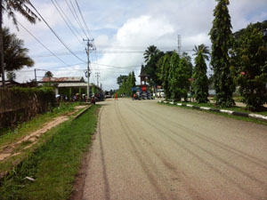

In 1975 Indonesia occupied the territory of Democratic Republic of East Timor where two main languages are prevalent. Tetum or Tetun is a mixture of the native Terik and simplified Portuguese. The second language also named Dagoda, Dagada, and Dagaga —still at developmental phase and spoken by approximately 37,000 people in East Timor vicinity of the town of Lospalos, in the Lautem district — is Fataluku.
Fataluku and Tetum Translations
Due to the influence of Portugal, the Catholic Church and missionaries, mass and scripture texts are now written in Fataluku. It is a Papuan language that differs from Tetun and the majority of languages spoken in East Timor. Fataluku uses the Roman alphabet. Fatalaku and Tetum translators associated with Alpha Translation are fully proficient in English to ensure accuracy of their translation is also culturally sensitive. They all have the professional training required to deliver professional Fataluku and Tetum translations. We always strive to reduce the possibility of error when we translate legal, medical Fataluku and Tetum documents.
Fataluku, Tetun Translators
Besides Fataluku and Tetun, there are 18 additional languages spoken in East Timor which are: Adabe, Baikeno, Bunak, Galolen, Habun, Idaté, Kairui-Midiki, Kemak, Lakalei, Makasae, Makuva, Mambae, Nauete, Pidgin, Timor Portuguese, Tetun Dili, Tukudede, and Waima'a. Alpha Translation Svcs, Inc. has a dedicated team of professional Fataluku and Tetum transcribers and translators working tirelessly to deliver accurate transcriptions and translations. Our goal is to provide multimedia companies top-level accurate transcripts and translations of Fataluku and Tetum movies, videos or audio recordings. When dealing with Fataluku and Tetum one-on-one interviews, we can render either a clean verbatim transcription or translation meaning that the interviewee's responses are verbatim and that all double words, non-verbal utterances (uh, hum, stutters) are left out.
Fataluku Legal Translation
Alpha Translation Svcs, Inc. provides Fataluku legal translation services for family court documents, contracts, and agreements. Our team of Tetum and Fataluku translators translate specialize in legal documents, including business correspondence, and technical documents. Alpha Translation Svcs, Inc.'s dedicated project managers and Fataluku translators bring the experience and resources to successfully complete your projects on-time. No matter the time of day or your location, our friendly staff will respond promptly to your Fataluku inquiry for legal translation services.
Tetum Transcription
Alpha Translation Svcs, Inc. has a dedicated team of professional Fataluku transcribers and Tetum translators working tirelessly to deliver accurate transcriptions and translations. Our goal is to provide multimedia companies top-level accurate transcripts and translations of Fataluku and Tetum movies, videos or audio recordings. When dealing with Fataluku and Tetum one-on-one interviews, we can render either a clean verbatim transcription or translation meaning that the interviewee's responses are verbatim and that all double words, non-verbal utterances (uh, hum, stutters) are left out.Fataluku Translation Cost
Alpha Translation, Inc. is determined to provide you with quality Fataluku translations at competitive pricing. Our pricing for Fataluku and Tetum translation projects uses many parameters. The first one is the content that needs to be translated into Fataluku. Our approach is to count the number of source words. The technicality of the subject matter: Fataluku translation of a straightforward document will be less expensive than a scientific or legal document.
Fataluku Translation Quote
Our price is based on English as a source document. Should the language combination be different from English, the rate will be higher. We can translate from any language into Fataluku including but not limited to Spanish, German, Korean, Japanese, or from any other languages. Another parameter when we quote Fataluku translation is the deadline to complete the project. Please keep in mind that at Alpha Translation Svcs, Inc., our goal is to deliver the highest Fataluku translation quality at the most competitive Tetun, Fataluku translation rate per word in the industry.